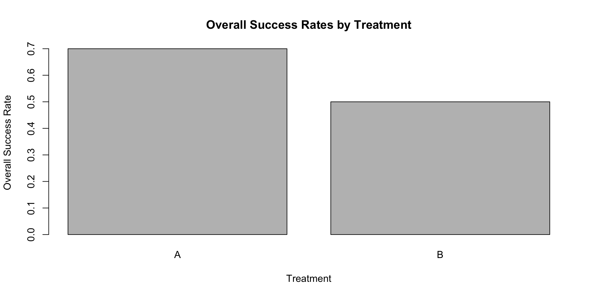
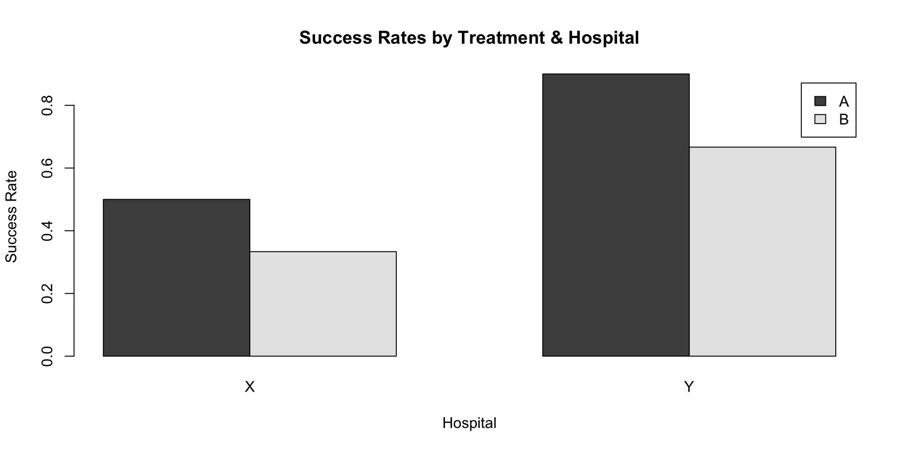

Hospital Treatment Patients Successes
1 X A 10 5
2 X B 90 30
3 Y A 10 9
4 Y B 90 60Association between Categorical Variables (3)
Ignoring an important variable can lead to Simpson’s Paradox, especially when analyzing categorical data. This paradox occurs when the relationship between two variables reverses or changes after considering a third variable.
How do we explore Simpsons’ paradox with categorical data?
Let’s consider two treatments, Treatment A and Treatment B, and their successes. Assume we also have information on where the treatments are carried out, either Hospital X or Hospital Y.
Hospital Treatment Patients Successes
1 X A 10 5
2 X B 90 30
3 Y A 10 9
4 Y B 90 60Turning this data into contingency tables
Treatment Successes Failures
A 14 6
B 90 90
Hospital Successes Failures
X 35 65
Y 69 31Let’s first compare the overall success rates for both treatments, ignoring the hospital.
# Calculate the overall success rate for Treatment A and B
overall_data <- aggregate(cbind(Patients, Successes) ~ Treatment,
data = hospital_data, sum)
overall_data$OverallSuccessRate <-
overall_data$Successes / overall_data$Patients
overall_data Treatment Patients Successes OverallSuccessRate
1 A 20 14 0.7
2 B 180 90 0.5
Treatment A has a higher success rate than Treatment B.
Now, let’s break down the success rates based on whether treatment was performed at Hospital X or Y.
# Calculate the overall success rate for Treatment A and B
hospital_data$SuccessRate <-
hospital_data$Successes / hospital_data$Patients
hospital_data Hospital Treatment Patients Successes Failures SuccessRate
1 X A 10 5 5 0.5000000
2 X B 90 30 60 0.3333333
3 Y A 10 9 1 0.9000000
4 Y B 90 60 30 0.6666667
Treatment A has a higher success rate than Treatment B in both hospitals.
Aggregate data on applicants to graduate school at Berkeley for the six largest departments in 1973 classified by admission and sex.
The variables and their levels are as follows:
Admit: Admitted, Rejected
Gender: Male, Female
Dept: A, B, C, D, E, F
When comparing two groups (e.g., Treatment vs. Control), the odds of success for each are calculated by:
Category 1:
\(w1 = \frac{\text{Success in Group 1}}{\text{Failure in Group 1}}\)
Category 2:
\(w2 = \frac{\text{Success in Group 2}}{\text{Failure in Group 2}}\)
The odds ratio tells us how much more likely success odds are in one group compared to the other:
\(\text{Odds Ratio} = \frac{w1}{w2}\)
Let’s assume, upon an initial look at the data, that the tables are collapsed over department (natural science, social science).
admit
gender Admitted Rejected
Female 557 1278
Male 1198 1493Odds
Let us look at the same data but divided into groups by department.
, , dept = A
admit
gender Admitted Rejected Sum
Female 89 19 108
Male 512 313 825
Sum 601 332 933
, , dept = B
admit
gender Admitted Rejected Sum
Female 17 8 25
Male 353 207 560
Sum 370 215 585
, , dept = C
admit
gender Admitted Rejected Sum
Female 202 391 593
Male 120 205 325
Sum 322 596 918
, , dept = D
admit
gender Admitted Rejected Sum
Female 131 244 375
Male 138 279 417
Sum 269 523 792
, , dept = E
admit
gender Admitted Rejected Sum
Female 94 299 393
Male 53 138 191
Sum 147 437 584
, , dept = F
admit
gender Admitted Rejected Sum
Female 24 317 341
Male 22 351 373
Sum 46 668 714
, , dept = Sum
admit
gender Admitted Rejected Sum
Female 557 1278 1835
Male 1198 1493 2691
Sum 1755 2771 4526Odds
admission_odds <- lodds(~ admit + gender + dept, data = admission_dat,
log = FALSE)
coef(admission_odds)Admitted:Rejected|Female:A Admitted:Rejected|Male:A
4.68421053 1.63578275
Admitted:Rejected|Female:B Admitted:Rejected|Male:B
2.12500000 1.70531401
Admitted:Rejected|Female:C Admitted:Rejected|Male:C
0.51662404 0.58536585
Admitted:Rejected|Female:D Admitted:Rejected|Male:D
0.53688525 0.49462366
Admitted:Rejected|Female:E Admitted:Rejected|Male:E
0.31438127 0.38405797
Admitted:Rejected|Female:F Admitted:Rejected|Male:F
0.07570978 0.06267806 2.5 % 97.5 %
Admitted:Rejected|Female:A 2.85443740 7.68691870
Admitted:Rejected|Male:A 1.42119020 1.88277768
Admitted:Rejected|Female:B 0.91708435 4.92389276
Admitted:Rejected|Male:B 1.43644040 2.02451551
Admitted:Rejected|Female:C 0.43593215 0.61225216
Admitted:Rejected|Male:C 0.46729337 0.73327208
Admitted:Rejected|Female:D 0.43419451 0.66386323
Admitted:Rejected|Male:D 0.40335753 0.60654021
Admitted:Rejected|Female:E 0.24934640 0.39637863
Admitted:Rejected|Male:E 0.27979716 0.52716949
Admitted:Rejected|Female:F 0.04999699 0.11464631
Admitted:Rejected|Male:F 0.04074158 0.09642579and Odds Ratios
admission_OR <- loddsratio(~ admit + gender + dept, data = admission_dat,
log = FALSE)
coef(admission_OR) A B C D E F
2.8635896 1.2461048 0.8825661 1.0854419 0.8185776 1.2079151 2.5 % 97.5 %
A 1.7111703 4.792127
B 0.5285366 2.937880
C 0.6656152 1.170230
D 0.8086284 1.457016
E 0.5528574 1.212011
F 0.6641723 2.196808In this example, Simpson’s paradox occurred because
both gender identity and admissions were related to a third variable, namely, the department.
First, women were more likely to apply to social science departments, whereas men were more likely to apply to natural science departments.
Second, the acceptance rate in social science departments was less than that in natural science departments.
Because women were more likely than men to apply to programs with lower acceptance rates, when department was ignored (i.e., when the data were aggregated over dept), it seemed that women were less likely than men to be admitted to graduate school, whereas the reverse was actually true.
A lurking variable is a variable that is not included as an explanatory variable in the analysis but can affect the interpretation of relationships between variables.
A lurking variable can falsely identify a strong relationship between variables or it can hide the true relationship.
To discover lurking variables, you must take the time to understand your data and the important variables that can affect a process.
This data set provides information on the fate of passengers on the fatal maiden voyage of the ocean liner ‘Titanic’, summarized according to economic status (class), sex, age and survival.
| Class | Sex | Age | Survived | Freq |
|---|---|---|---|---|
| 1st | Male | Child | No | 0 |
| 2nd | Male | Child | No | 0 |
| 3rd | Male | Child | No | 35 |
| Crew | Male | Child | No | 0 |
| 1st | Female | Child | No | 0 |
| 2nd | Female | Child | No | 0 |
, , Class = 1st
Survived
Sex No Yes
Male 118 62
Female 4 141
, , Class = 2nd
Survived
Sex No Yes
Male 154 25
Female 13 93
, , Class = 3rd
Survived
Sex No Yes
Male 422 88
Female 106 90
, , Class = Crew
Survived
Sex No Yes
Male 670 192
Female 3 20